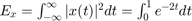
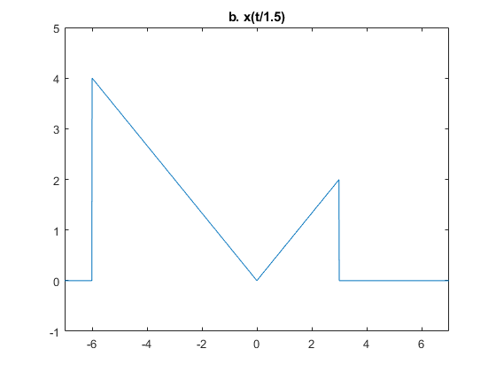

Práctica 3: Señales continuas
Contents
Integrantes
- Alvarez Garcia Elian Alexander
- Diego Vertiz Alexis
- Marquina Zendejas Victor
- Mendivil Herrera Jesus Alejandro
UPIITA IPN
Grupo: 2TV1
Objetivos
- Manipulación básica de MATLAB
- Gráficas de señales reales y complejas continuas
- Transformación de señales continuas (escalamientos y traslaciones)
- Calculo de energía y potencia de señales continuas
Introduccion
Matlab es un programa de cálculo numérico orientado a matrices. Matlab significa "Matrix Laboratory" (laboratorio matricial). Fue creado por Cleve Moler en 1984, surgiendo la primera versión con la idea de emplear paquetes de subrutinas escritas en Fortran en los cursos de álgebra lineal y análisis numérico, sin necesidad de escribir programas en dicho lenguaje. El lenguaje de programación M fue creado en 1970 para proporcionar un sencillo acceso al software de matrices LINPACK y EISPACK sin tener que usar Fortran. Actualmente Matlab es usado en una variedad de áreas de aplicación incluyendo procesamiento de señales e imágenes, diseño de sistemas de control, etc.
Octave es un lenguaje de alto nivel para realizar cálculos numéricos en el ordenador, es un programa capaz de interpretar este lenguaje y realizar los cálculos. Octave ofrece una interfaz de usuario interactiva, orientada a línea de comandos, pero también puede ser utilizado en modo no interactivo, leyendo sus órdenes de fichero. Otros programas de características similares, y hasta cierto punto compatibles, son el lenguaje R de la FSF, Scilab y el mismo Matlab. Estos dos últimos propietarios. Octave es software libre (bajo licencia GNU), lo que significa que se puede usar y redistribuir libremente, y que cualquiera puede ayudar para mejorarlo. Se puede tomar un breve curso introductoria a Matlab y Octave en el siguiente enlace: https://www.edx.org/course/matlab-octave-beginners-epflx-matlabeoctavebeginnersx
Python es un lenguaje de programación que cuenta con estructuras de datos eficientes y de alto nivel y un enfoque simple pero efectivo a la programación orientada a objetos. La sintaxis de Python y su tipado dinámico, junto con su naturaleza interpretada, hacen de éste un lenguaje ideal para scripting y desarrollo rápido de aplicaciones en diversas áreas y sobre la mayoría de las plataformas. El intérprete de Python y la extensa biblioteca estándar están a libre disposición en forma binaria y de código fuente para las principales plataformas desde el sitio web de Python, https://www.python.org/, y puede distribuirse libremente.
Desarrollo
Problema 1
- Crea una función que se llame fun1 y reciba dos parametros y la función debe regresar la evaluación , esta función debe trabajr con y . Debe mostrar su código en el reporte (sin ejecutar).
function [f]=fun1(w,a) f=a./(a.^2+w.^2); end
Problema 2
- Construya una función que gráfique funciones de en el formato de su elección y pruebe su código mostrando la gráfica de vs en el intervalo para , no debe incluir el código, solo el uso de la función para mostrar la gráfica
a=1; w=-2:0.001:2; Fw=a./(a.^2+w.^2); createfigure(w,fun1(w,a))
Problema 3
XXXXXXXXXXXXXXXXXXXXXXXXXXXX
Problema 4
- Realiza las mismas operaciones que Lathi en las secciones M1.1 a M1.4 que se encuentra al final del capítulo 1 y antes de la sección de problemas, cambie los inline por funciones anonimas
Lathi M1.1 Funciones Anonimas
Considerando la señal Tenemos la siguiente función de forma anonima:
f = @(t) exp(-t).*cos(2*pi*t);
Evaluando f(t) obtenemos
t=0; f(t)
ans =
1
Cuando t es un vector que solo tiene numeros enteros, es decir, [-2, -1, 0, 1, 2]
t=(-2:2);
% La salida es la siguiente
f(t)
ans =
7.3891 2.7183 1.0000 0.3679 0.1353
Por lo que la grafica queda de la siguiente manera:
clf; plot(t, f(t)); xlabel('t'); ylabel('f(t)'); title('Figura M1.1: f(t)=e^{-t}cos(2\pit) para t=(-2:2)'); grid;
La ilustración no corresponde con el comportamiento oscilatorio, ya que hacen falta más puntos, así que ahora t tendra 100 puntos por oscilacion
t=(-2:0.01:2); % Una vez definida t, graficamos de nuevo. clf; plot(t, f(t)); xlabel('t'); ylabel('f(t)'); title('Figura M1.2: f(t)=e^{-t}cos(2\pit) para t=(-2:0.01:2)'); grid;
Lathi M1.2 Operadores relacionales y la función escalón
El escalón unitario puede ser definido usando el operador >=
u = @(t) t >= 0; % Usando t=(-2:2) para graficar u(t), tenemos: clf; t=(-2:2); plot(t, u(t)); xlabel('t'); ylabel('u(t)'); title('Figura M1.3: u(t) para t=(-2:2)');
Al existir solo enteros los puntos se unen entre sí, por lo que necesitamos más puntos de t y definir los limites para la grafica en el eje vertical y horizontal
clf; t=(-2:0.01:2); plot(t,u(t)); xlabel('t'); ylabel('u(t)'); title('Figura M1.4: u(t) para t=(-2:0.01:2) con modificacion de limites de ejes'); axis ([-2 2 -0.1 1.1]);
Los operadores relacionales pueden ser combinados utilizando el AND, OR y NOT lógicos: &, | y ~, respectivamente. El pulso unitario p(t)=u(t)-u(t-1) se muestra a continuación:
p=@(t) (t>=0)&(t<1); t=(-1:0.01:2); plot(t,p(t)); xlabel('t'); ylabel('p(t)=u(t)-u(t-1)'); title('Figura M1.5: p(t)=u(t)-u(t-1) para -1<t<2'); axis([-1 2 -.1 1.1]);
Lathi M1.3 Operadores relacionales y la función escalón
Considerando , tenemos:
g=@(t) exp(-t).*cos(2*pi*t).*u(t); % Una operación combinada de escalamiento y desplazamiento puede ser % representada por g(at+b), donde a y b son constantes. % El valor "a" escala a la señal, y "b" la desplaza. Graficaremos g(2t +1) % sobre (-2<t<2), con a=2, que es la señal comprimida en un factor de 2 y % desplazada por una unidad hacia la izquierda. t=(-2:0.01:2); plot(t, g(2*t+1)); xlabel('t'); ylabel('g(2t+1)'); title('Figura M1.6: g(2t +1) sobre (-2<t<2)'); grid;

Ahora consideraremos g(-t+1) sobre (-2<t<2),al ser a<0, la onda será reflejada, y como b>0 la onda se movera hacia la derecha
plot(t, g(-t+1)); xlabel('t'); ylabel('g(-t+1)'); title('Figura M1.7: g(-t+1) sobre (-2<t<2)'); grid;
Ahora se graficará h(t)= g(2t + 1)+g(?t + 1) sobre (?2<t<2)
plot(t, g(2*t+1)+g(-t+1)); xlabel('t'); ylabel('h(t)'); title('Figura M1.8: h(t)=g(2t+1)+g(?t+1) sobre (?2<t<2)'); grid;
Lathi M1.4 Integración numérica y estimación de la energía de la señal
Considerando la señal . La energía de x(t) es representada como . Realizando la integral, resulta . La integral de la energía puede también ser evaluada numéricamente, mediante el método de aproximación rectangular: Evaluar la integral en puntos uniformemente separados por , multiplicar cada evaluación por para calcular las áreas de los rectángulos, y entonces sumar las áreas de todos los rectángulos. Para esto se creará la siguiente función:
x=@(t) exp(-t).*((t>=0)&(t<1));
y para un vector adecuado para el tiempo es:
t=(0:0.01:1);
por lo que el resultado aproximado es
E_x=sum(x(t).*x(t)*0.01)
E_x =
0.4367
El resultado tiene un error relativo casi de 1%. Así que, reduciendo la aproximación es mejorada. Para  tenemos el siguiente resultado, ahora con un error relativo de 0.1%.
tenemos el siguiente resultado, ahora con un error relativo de 0.1%.
t=(0:0.001:1); E_x=sum(x(t).*x(t)*0.001)
E_x =
0.4328
Otra herramienta es la función quad, que se puede utilizar como:
x_squared=@(t) exp(-2*t).*((t>=0)&(t<1)); E_x=quad(x_squared,0,1)
E_x =
0.4323
En este caso el error relativo es de -0.0026%.
Considere la señal g(t) definida en las secciones previas. La energía es expresada como . La respuesta se calcula de la siguiente manera
g_squared=@(t) exp(-2*t).*(cos(2*pi*t).^2).*(t>=0);
A pesar de que el límite de integración superior es infinito, la exponencial decae y tiende a cero desde un número no muy grande, por ejemplo, para t=100. Ahora, utilizaremos un límite superior de junto con un :
t=(0:0.001:100); E_g=sum(g_squared(t)*0.001)
E_g =
0.2567
Y vamos a obtener una mejor aproximación mediante la función integral:
E_g=integral(g_squared,0,100)
E_g =
0.2562
Problema 5
Resuelve el problema 1.2.2 usando las herramientas del paso anterior.
clf;
x=@(t) (-t).*((t>=-4)&(t<0))+(t).*((t>=0)&(t<2));
t=(-10:0.01:10);
plot(t,x(t));
title('x(t)');
axis([-7 7 -1 5]);
grid;
Para la señal x(t) bosqueja:
- a. x(t-4)
- b. x(t/1.5)
- c. x(-t)
- d. x(2t-4)
- e. x(2-t)
plot(t,x(t-4));
title('a. x(t-4)');
axis([-7 7 -1 5]);
plot(t,x(t./1.5));
title('b. x(t/1.5)');
axis([-7 7 -1 5]);
 plot(t,x(-t));
title('c. x(-t)');
axis([-7 7 -1 5]);
plot(t,x(2.*t-4));
title('d. x(2t-4)');
axis([-7 7 -1 5]);
plot(t,x(-t+2));
title('e. x(2-t)');
axis([-7 7 -1 5]);
Problema 6
- Escriba una función que se llame energia que reciba como argumento una función (anonima o simbolica) y que regrese el calculo de la energía, para esto puede resultar útil investigar las instrucciones int , integral Se presupone utilizar el código solo con funciones de energia. Muestre el código sin ejecutar, y posteriormente resuelva el problema 1.1.3
1.1.3 a. Encuentra la energia del par de señales x(t) y y(t). Bosqueja y encuentra la energia de las señales x(t)+y(t) y x(t)-y(t).

clf; ener=@(G,LimiteMenor,LimiteMayor) integral (G,LimiteMenor,LimiteMayor); x=@(t)(abs(1).^2).*(t>0).*(t<=2); y=@(t)(abs(1).^2).*(t>0).*(t<=1)+(abs(-1).^2).*(t>1).*(t<=2);
a. Energia de x =
ener(x,0,2)
ans =
2
a. Energia de y =
ener(y,0,2)
ans =
2
a. Energia de x+y =
ener(x,0,2)+ener(y,0,2)
ans =
4
a. Energia de x-y =
ener(x,0,2)-ener(y,0,2)
ans =
0
x=@(t)(sin(t).^2).*(t>0).*(t<=2*pi); y=@(t)(abs(1).^2).*(t>0).*(t<=2*pi);
b. Energia de x =
ener(x,0,2*pi)
ans =
3.1416
b. Energia de y =
ener(y,0,2*pi)
ans =
6.2832
b. Energia de x+y =
ener(x,0,2*pi)+ener(y,0,2*pi)
ans =
9.4248
b. Energia de x-y =
ener(x,0,2*pi)-ener(y,0,2*pi)
ans = -3.1416
x=@(t)(sin(t).^2).*(t>0).*(t<=1*pi); y=@(t)(abs(1).^2).*(t>0).*(t<=1*pi);
c. Energia de x =
ener(x,0,1*pi)
ans =
1.5708
c. Energia de y =
ener(y,0,1*pi)
ans =
3.1416
c. Energia de x+y =
ener(x,0,1*pi)+ener(y,0,1*pi)
ans =
4.7124
c. Energia de x-y =
ener(x,0,1*pi)-ener(y,0,1*pi)
ans = -1.5708
Problema 7
- Escriba una función que se llame potencia que reciba como argumento una función (anonima o simbolica) y que regrese el calculo de la potencia para esto puede resultar útil investigar las instrucciones int , integral Se presupone utilizar el código solo con funciones de potencia. Muestre el código sin ejecutar, y posteriormente resuelva el problema 1.1.4
Encuentra la potencia de la señal periodica x(t). Tambien encuentra las potencias y los valores RMS de:
- a. -x(t)
- b. 2x(t)
- c. cx(t)
Referencias
B. P. Lathi, Linear Systems and Signals, Second Edition, Oxford.